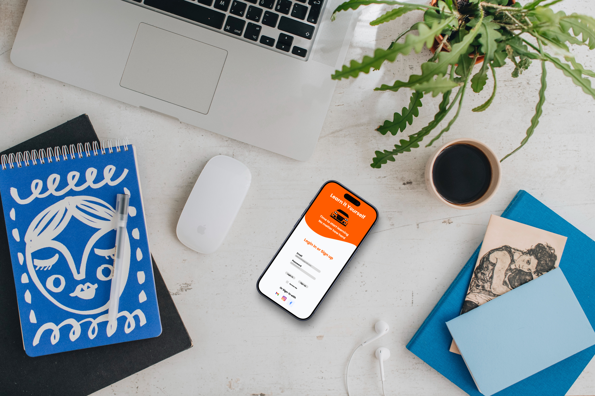
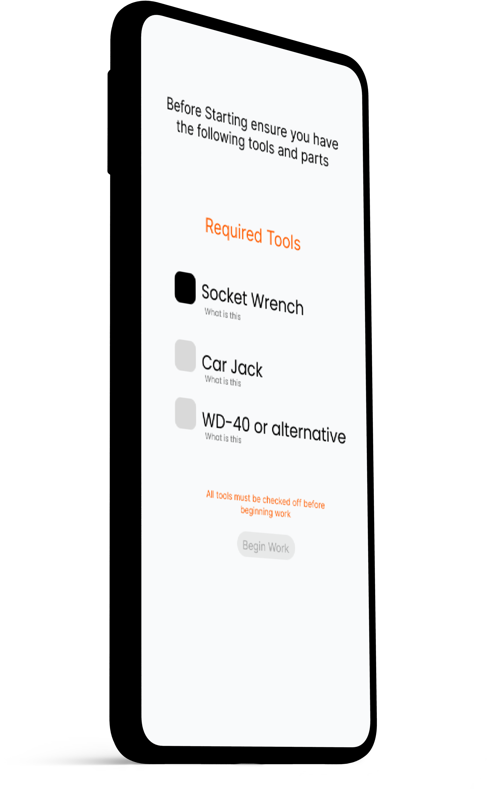
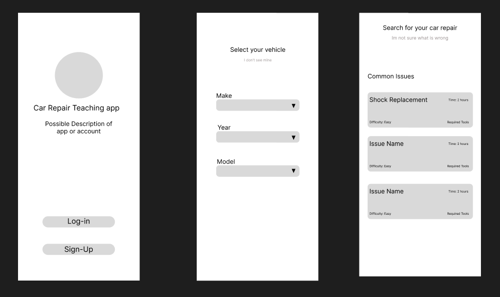

Developed for the Patterns and Context course, this app mockup provides a comprehensive learning platform for users interested in performing their own car maintenance.

Learn it Homescreen Mockups
As a semester-long project covering user research and interface design, Learn It went through multiple iterations to achieve ease of use while providing a high level of technical knowledge for novice mechanics.

Learn it Tool Checklist
Many hobbyists struggle with incomplete advice or starting projects unprepared. I wanted to create a solution that ensured users had a validated checklist of tools and access to high-quality, accurate video tutorials before ever picking up a wrench.
The Learn It mobile application bridges a gap in the market for all-in-one maintenance help. By featuring community-generated content that is vetted for accuracy, the app fosters a transparent and trustworthy learning environment for car owners.

Learn it Tool Figma Wireframes
The initial low-fidelity mockups were designed over three weeks, incorporating peer feedback and professor requirements to refine the core navigation and user flow.
Using Figma, I developed the final interactive prototypes. These versions utilized a refined color palette and incorporated an improved video playback area and a dedicated community forum section for troubleshooting.
This project provided significant insight into user context and how to design around specific, high-stakes needs. Beyond the classroom, I am currently continuing to develop this concept into a fully functional prototype.